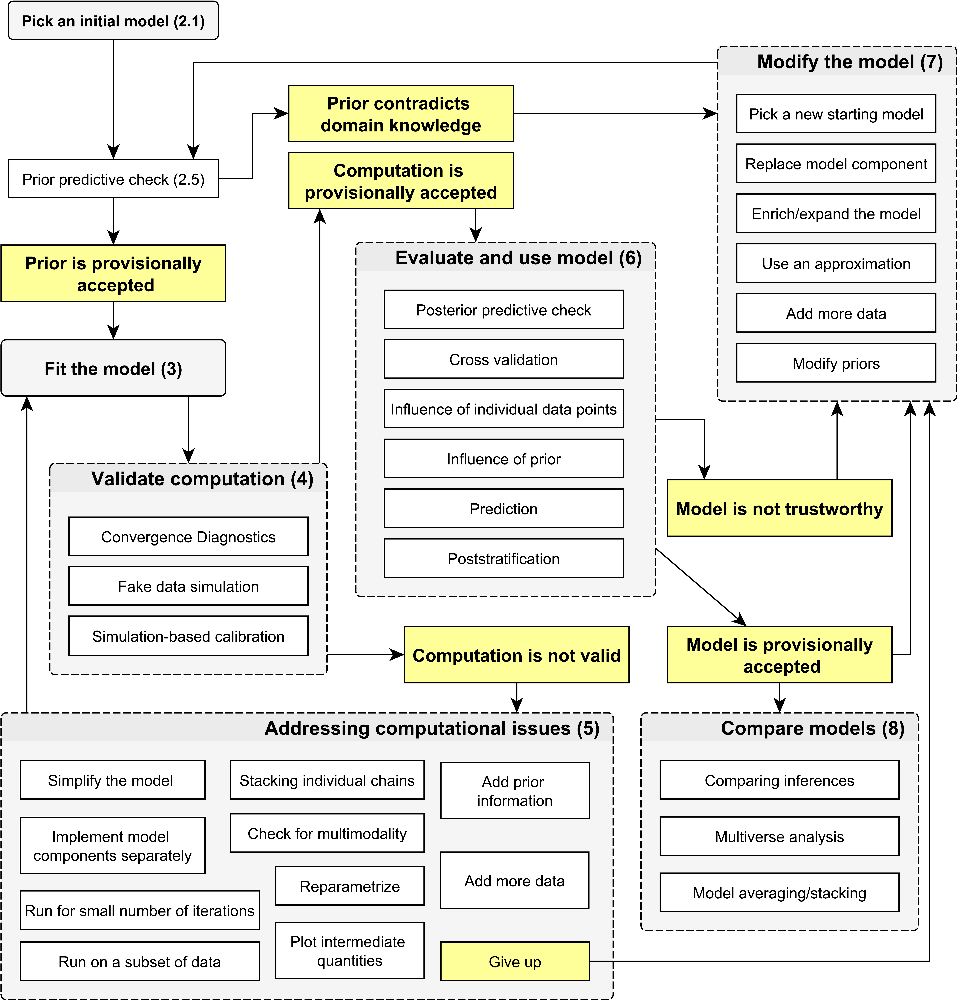
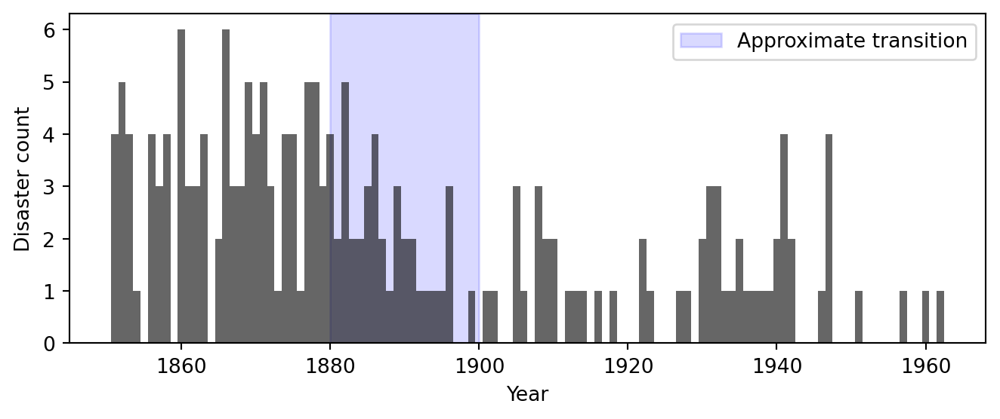
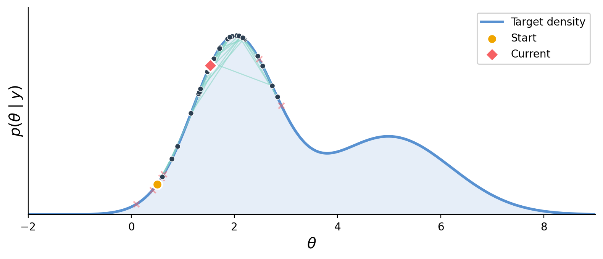
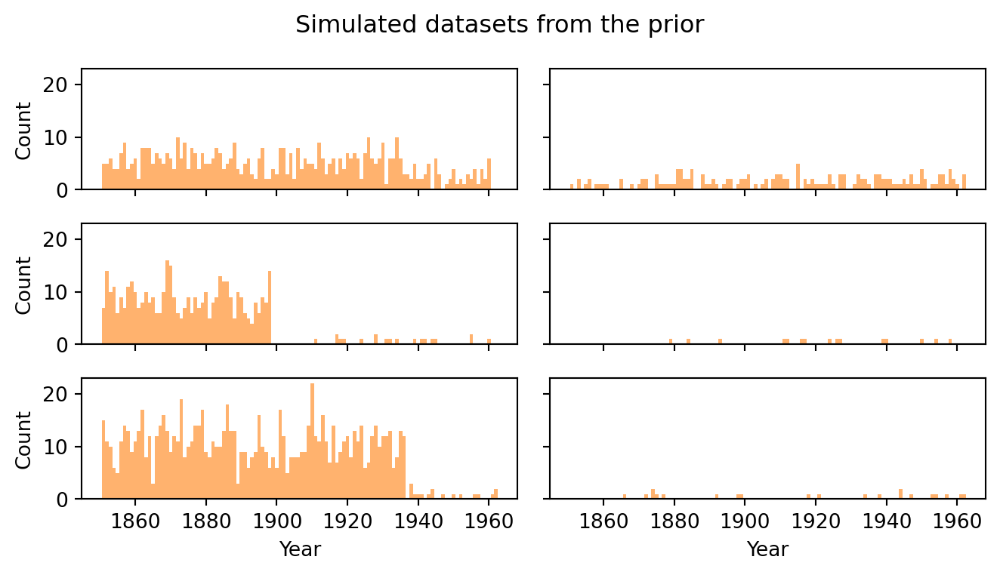
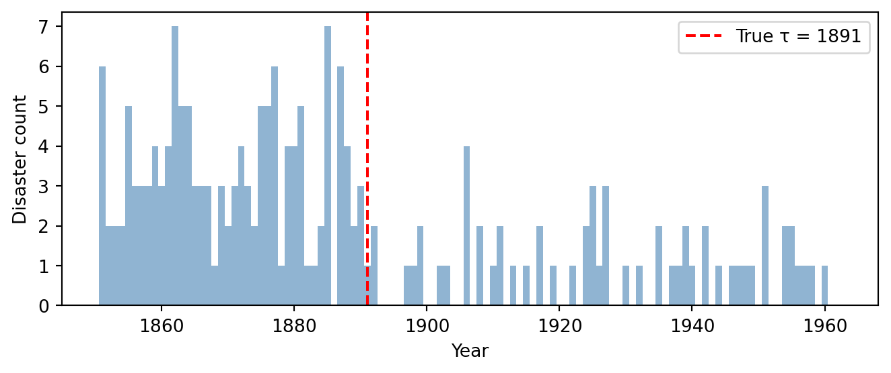

mcmc.run(random.PRNGKey(1), n_years, counts=fake_counts)
idata_fake = az.from_numpyro(mcmc)Bayesian Data Analysis
The Bayesian Workflow
Modeling
- Explore data
- Conceive a model
- Implement as code
- Choose & check priors
Inference
- Simulate fake data
- Run inference
- Diagnose convergence
Evaluation
- Explore posteriors
- Posterior predictive checks
- Sensitivity & comparison
These steps are iterative — we often loop back to revise the model after a check reveals a problem.
The Bayesian Workflow

Bayesian workflow overview (Gelman et al. 2020).
Uk Coal Mining Disasters

Questions
- When did the disaster rate change?
- By how much did it change?
- Is there evidence for a change at all?
The Change-Point Model
Disasters in year \(t\) occur at some rate \(\lambda_t\). \[ y_t \sim \text{Poisson}(\lambda_t) \]
At an unknown year \(\tau\), the rate switches:
\[ \lambda_t = \begin{cases} \rho_1 & \text{if } t < \tau, \\ \rho_2 & \text{if } t \geq \tau. \end{cases} \]
Three unknowns: early rate \(\rho_1\), late rate \(\rho_2\), switchpoint \(\tau\).
Full model
\[ \begin{aligned} \rho_1 &\sim \text{Exponential}(\alpha), \\ \rho_2 &\sim \text{Exponential}(\alpha), \\ \tau &\sim \text{Categorical}\!\left(\tfrac{1}{T}, \ldots, \tfrac{1}{T}\right), \\ y_t &\sim \text{Poisson}(\lambda_t), \quad t = 1, \ldots, T. \end{aligned} \]
Software: NumPyro + ArviZ
NumPyro — JAX-based PPL
- Models are Python functions with sampling statements.

Markov chain Monte Carlo Explores the posterior via random proposals: accepted moves (green) walk along the density; rejected proposals (red ×) are discarded. Produces correlated samples — diagnostics needed.
ArviZ — posterior diagnostics and visualization.
Implementing in NumPyro
Each line of the math maps to a numpyro.sample call:
| Math | NumPyro |
|---|---|
| \(\rho_1 \sim \text{Exp}(\alpha)\) | numpyro.sample("rho_1", dist.Exponential(alpha)) |
| \(\tau \sim \text{Cat}(1/T, \ldots)\) | numpyro.sample("tau", dist.Categorical(probs=...)) |
| \(y_t \sim \text{Poisson}(\lambda_t)\) | numpyro.sample("obs", dist.Poisson(rate), obs=counts) |
The obs keyword — dual-purpose design
obs=None→ draw from the distribution (generative / simulation)obs=counts→ score observed data (conditioning for inference)
One function serves as both generative model and conditioned model.
The Model Function
def model(n_years, counts=None):
alpha = 1.0 / 3.0
# Priors
rho_1 = numpyro.sample("rho_1", dist.Exponential(alpha))
rho_2 = numpyro.sample("rho_2", dist.Exponential(alpha))
tau = numpyro.sample("tau", dist.Categorical(
probs=jnp.ones(n_years) / n_years))
# Piecewise-constant rate vector
idx = jnp.arange(n_years)
lambda_t = jnp.where(idx < tau, rho_1, rho_2)
numpyro.deterministic("rate", lambda_t)
# Likelihood (or generative sampling)
numpyro.sample("obs", dist.Poisson(lambda_t), obs=counts)jnp.wherebuilds the rate vector — vectorized, no Python loopnumpyro.deterministicrecords computed quantities for later inspection
Debugging: Tracing Shapes
Run the model once in trace mode to inspect all site shapes:
rho_1 shape=()
rho_2 shape=()
tau shape=()
rate shape=(112,)
obs shape=(112,)If a shape looks unexpected, this is the quickest way to catch it.
Choosing Priors
Priors fall on a spectrum:
| Informative | Encodes specific domain knowledge |
| Weakly informative | Excludes implausible values, stays broad |
| Uninformative | Flat / maximal ignorance |
Never assign zero prior probability Unless a value is truly impossible. If the prior is zero somewhere, no amount of data can move the posterior there.
Our choices:
- \(\text{Exp}(1/3)\) for rates (mean = 3, sd = 3)
- Uniform \(\text{Categorical}\) for \(\tau\).
Prior Predictive Checks
Idea: simulate data from the prior before fitting. Does the model produce plausible datasets?
Each draw produces a full parameter set (\(\rho_1, \rho_2, \tau\)), a rate trajectory, and a synthetic count vector.
This is the first use of the model’s dual-purpose design: calling with counts=None generates data.
Prior Predictive: Rate Envelope

- Wide envelope reflects vague prior — observed data falls well within it
- If envelope were too narrow or missed the data, priors need revision
Prior Predictive: Simulated Datasets

- Counts are in single digits with visible changepoints — qualitatively plausible
- When in doubt, err on the side of more diffuse priors
Fake-Data Simulation
Generate a synthetic dataset with known parameters — a test bed where we know the truth.
If the sampler can’t recover known parameters on fake data, we shouldn’t trust it on real data.
Simulated Fake Data

- Qualitative structure matches the observed data — single-digit counts with a visible drop
- We will run inference on this fake data first, then check parameter recovery
Setting Up the Sampler
Our model mixes discrete (\(\tau\)) and continuous (\(\rho_1, \rho_2\)) parameters (standard NUTS doesn’t work).
| Component | Role |
|---|---|
NUTS(model) |
Gradient-based sampler for continuous parameters |
DiscreteHMCGibbs |
Gibbs layer that enumerates over discrete \(\tau\) |
num_warmup=1000 |
Tuning draws (discarded) |
num_samples=2000 |
Posterior draws per chain |
num_chains=4 |
Independent chains for convergence checks |
Parameter Recovery on Fake Data
| mean | sd | eti89_lb | eti89_ub | ess_bulk | ess_tail | r_hat | mcse_mean | mcse_sd | |
|---|---|---|---|---|---|---|---|---|---|
| rho_1 | 3.395 | 0.29 | 2.9 | 3.9 | 6816 | 5687 | 1.00 | 0.0035 | 0.0025 |
| rho_2 | 0.847 | 0.11 | 0.68 | 1 | 7538 | 5851 | 1.00 | 0.0013 | 0.00093 |
| tau | 40.33 | 1.19 | 38 | 42 | 9349 | 7715 | 1.00 | 0.012 | 0.0084 |
Check True values (\(\rho_1 = 3.5\), \(\rho_2 = 0.8\), \(\tau = 40\)) should fall within the 89% credible intervals. If recovery fails — debug before touching real data.
Fake-Data Posterior Marginals

- True values land comfortably within the posteriors — the pipeline is working
- Parameters are identifiable from data of this size
Inference on Observed Data
Convergence Diagnostics: Numerical
Convergence Diagnostics: Trace Plots
Convergence Diagnostics: Rank Plots
Joint Posterior
Posterior Rate Trajectory
Derived Quantities: Disasters Avoided
Uncertainty Propagation
Posterior Predictive Checks
PPC: Replicated Counts Envelope
PPC: Simulated Datasets
PPC: Summary Statistics
PPC: Rootogram
Sensitivity Analysis
Building the DataTree
Power-Scaling Sensitivity Results
Model Comparison: Overview
Constant-Rate Model
Sigmoid Change-Point Model
Sigmoid Model: Posterior Rate
LOO-CV Comparison
LOO Diagnostics: Pareto k-hat
Summarizing Results
The Folk Theorem of Statistical Computing
Modeling Tips
Gelman, Andrew, Aki Vehtari, Daniel Simpson, Charles C. Margossian, Bob Carpenter, Yuling Yao, Lauren Kennedy, Jonah Gabry, Paul-Christian Bürkner, and Martin Modrák. 2020. “Bayesian Workflow.” arXiv. https://doi.org/10.48550/ARXIV.2011.01808.